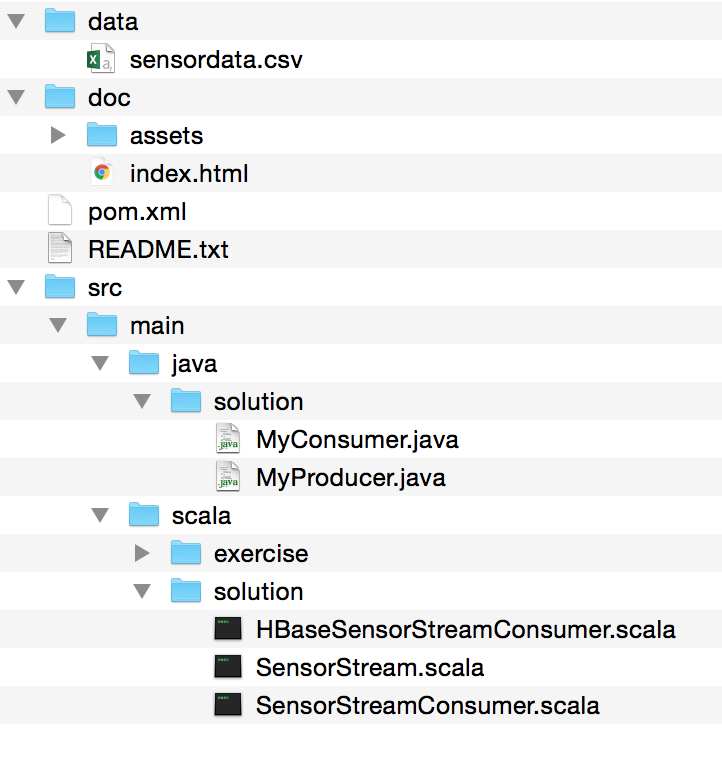

Spark Streaming, HBase and Kafka API Workshop
Discover Spark, Spark Streaming, Kafka API and HBase to create a Time Series Application
In this activity you will build and run a Spark Streaming application. Spark Streaming programs are best run as standalone applications built using Maven or sbt. First we will load and inspect the data using the spark shell , then we will use Spark Streaming from the shell. This will make it easier to understand how to understand the application code.
Hbase, Spark and Kafka application will be deployed on MapR cluster. (MapR Streams)
Setup
Installation
For this lab we will use MapR Hadoop Sandbox 5.2 (Virtual Machine) or a MapR Cluster deployed on the cloud. The MapR cluster contains all the necessary components : Apache Kafka/MapR Streams, Apache Spark and Apache HBase/MapR-DB.
- Copy the
mapr-streams-spark-hbase-workshop-master.zipto your laptop - Copy the
mapr-streams-spark-hbase-workshop-master.zipto your Sandbox/Cluster home directoryscp mapr-streams-spark-hbase-workshop-master.zip [username]@node-ip:/user/[username]/.
- Connect to your Sandbox/Cluster
if you are using Amazon cluster, use the following command:
ssh [username]@node-ip
if you are using MapR sandbox use the following command:ssh user01@localhost -p 2222
- Unzip
mapr-streams-spark-hbase-workshop-master.zipin your Sandbox/Clustercd /user/$USERID unzip mapr-streams-spark-hbase-workshop-master.zip
Copy the data into a new foldermkdir data cp ./mapr-streams-spark-hbase-workshop-master/data/* ./data/
The data folder contains a csv file (sensordata.csv … ), that will be used to inject "event" into our aplication.
Each line in the CSV looks like:
BBKING,3/14/14,23:46,9.78,0.943,1088,0.24,88,1.86
The fields are :- resid: Sensor/Resource ID, as string
- date: Date of the capture/event as string using MM/DD/YY
- time: Time of the event as string using HH:MN
- hz: Frequence as double
- disp: double (not used in this application)
- flo: double (not used in this application)
- sedPPM: double (not used in this application)
- psi: pressure as double
- chlPPM: double (not used in this application)
We will use this CSV file to do some spark operation such as:
- Read file
- Query data
- Aggregate data
Note, that the volume of data is pretty small for this example, but it would work the same way with a very large dataset except that the data processing will be distributed on all the nodes of the cluster by Spark and MapR.
- Now unzip
mapr-streams-spark-hbase-workshop-master.zipon your laptop.
When you unzip the file mapr-streams-spark-hbase-workshop-master.zip, it will create the following structure.
There is an exercises package with stubbed code for you to finish and there is a solutions package with the complete solution. Open/Import either project into your IDE following the instructions below. Optionally you can just edit the scala files and use maven on the command line, or if you just want to use the prebuilt solution, you can copy the solution jar file from the target directory.

Load and Inspect data using the Spark Shell
ssh user01@ipaddress
Launch the Spark Interactive Shell
cd /opt/mapr/spark/spark-2.0.1/bin/spark-shell --master local
Load Data in Spark RDD
shellcommands directory.// Import Utility Class import org.apache.spark.util.StatCounter
Below we load the data from the csv file into a Resilient Distributed Dataset (RDD). RDDs can have transformations and actions; the
take(1) action returns the first element in the RDD.
// load the data into a new RDD, replace $USERID with the proper path
val textRDD = sc.textFile("/user/$USERID/data/sensordata.csv")
// Return the first element in this RDD
textRDD.take(1)
Count the number of lines in your RDD:
textRDD.count()
Transform the RDD into a new RDD
Spark, and Scala allow you to create Class and transform each line of the RDD into this class. The code below:
- Create a new Scala class
Sensor - Create a new function
parseSensorthat parse each line and create an instance of Sensor - Then use the RDD created above and apply the
map()transformation, that will be applied to each element of textRDD to create the RDD of sensor objects.
//define the schema using a case class
case class Sensor(
resid: String,
date: String,
time: String,
hz: Double,
disp: Double,
flo: Double,
sedPPM: Double,
psi: Double,
chlPPM: Double
)
// function to parse line of sensor data into Sensor class
def parseSensor(str: String): Sensor = {
val p = str.split(",")
Sensor(p(0), p(1), p(2), p(3).toDouble, p(4).toDouble, p(5).toDouble, p(6).toDouble, p(7).toDouble, p(8).toDouble)
}
// create an RDD of sensor objects
val sensorRDD= textRDD.map(parseSensor)
// The RDD first() action returns the first element in the RDD
sensorRDD.take(1)
Take a look to the 2 RDDs you have in your context textRDD and sensorRDD. You should see some differences (class, type, ...)
Get some statistics from RDD
actions to get some values, or transformations to get new RDD.
// Return the number of elements in the RDD sensorRDD.count() // create an alert RDD for when psi is low val alertRDD = sensorRDD.filter(sensor => sensor.psi < 5.0) // print some results alertRDD.take(3).foreach(println)
Let's now do some aggregation on the data, and get more statistics
- Create a new RDD, as key value that contains the sensor, date and PSI.
- Group the values by sensor and date and get some stats using StatCounter class
- Then print the 3 first values of the new stats RDD
// transform into an RDD of (key, values) to get daily stats for psi val keyValueRDD=sensorRDD.map(sensor => ((sensor.resid,sensor.date),sensor.psi)) // print out some data keyValueRDD.take(3).foreach(kv => println(kv)) // use StatCounter utility to get statistics for sensor psi val keyStatsRDD = keyValueRDD.groupByKey().mapValues(psi => StatCounter(psi)) // print out some data keyStatsRDD.take(5).foreach(println)
Questions:
-
How many entries have a psi equals to 100?
-
List the statistics for the PSI per "sensor"
Analyze the data with DataFrame
toDF().
Create DataFramces from existing RDD
toDF() method. The Sensor class will be use to define the DataFrame entries.
// change to a DataFrame val sensorDF = sensorRDD.toDF()
Question:
-
How can you create the DataFrame directly from the CSV file?
Explore the data set with queries
import org.apache.spark.sql.SparkSession
// Create a spark SQL session; ideallu replace $USERID by your user
val spark = SparkSession.builder().appName("Workshop $USERID").getOrCreate()
// For implicit conversions like converting RDDs to DataFrames
import spark.implicits._
// group by the sensorid, date get average psi
sensorDF.groupBy("resid", "date").agg(avg(sensorDF("psi"))).take(5).foreach(println)
// Displays the content of the DataFrame to stdout
sensorDF.show()
// Display dataframe schema
sensorStatDF.take(5).foreach(println)
// register as a temp table then you can query
sensorDF.createOrReplaceTempView("sensor")
// get the max , min, avg for each column
val sensorStatDF = spark.sql("SELECT resid, date,MAX(hz) as maxhz, min(hz) as minhz, avg(hz) as avghz, MAX(disp) as maxdisp, min(disp) as mindisp, avg(disp) as avgdisp, MAX(flo) as maxflo, min(flo) as minflo, avg(flo) as avgflo,MAX(sedPPM) as maxsedPPM, min(sedPPM) as minsedPPM, avg(sedPPM) as avgsedPPM, MAX(psi) as maxpsi, min(psi) as minpsi, avg(psi) as avgpsi,MAX(chlPPM) as maxchlPPM, min(chlPPM) as minchlPPM, avg(chlPPM) as avgchlPPM FROM sensor GROUP BY resid,date")
// print out the results
sensorStatDF.take(5).foreach(println)
The following code extract the first PSI value of the
sensorDF
sensorDF.select("psi").take(1)
Questions:
-
How can you show the first 100 "psi" values?
-
How can I get the list of all sensor? (field
resid- tips: apply distinct on select statement)
Summary
In the next section you will use the same data source but use the Streaming API.
Use Spark Streaming with the Spark Shell
For this example, the streaming API will use the File Streams, this means that the Spark application will capture automatically any new file as datasource.
Spark Streaming supports data sources such as Directories, HDFS directories, TCP sockets, Kafka, Flume, Twitter, etc. Data Streams can be processed with Spark’s core APIS, DataFrames SQL, or machine learning APIs, and can be persisted to a filesystem, HDFS, databases, or any data source offering a Hadoop OutputFormat.

Depending of your application you will chose the source. In this example we can imagine that the various sensor are pushing new files in a directory, and each time the application will capture it automatically.
mkdir -p /user/$USER/stream
Launch the Spark Interactive Shell
/opt/mapr/spark/spark-2.0.1/bin/spark-shell --master local[2]
import org.apache.spark.SparkConf
import org.apache.spark.streaming.{Seconds, StreamingContext}
import StreamingContext._
- We create the class Sensor that will be used later on. (same as before)
- We create a StreamingContext, the main entry point for streaming functionality, with a 2 seconds batch interval.
- Next, we use the StreamingContext textFileStream(directory) method to create an input stream
case class Sensor(
resid: String,
date: String,
time: String,
hz: Double,
disp: Double,
flo: Double,
sedPPM: Double,
psi: Double,
chlPPM: Double
) extends Serializable
val ssc = new StreamingContext(sc, Seconds(2))
val linesDStream = ssc.textFileStream("/user/$USERID/stream/")
linesDStream.print()

// for each RDD. performs function on each RDD in DStream
linesDStream.foreachRDD(rdd=>{
val sensorDStream = rdd.map(_.split(",")).map(
p => Sensor(
p(0),
p(1),
p(2),
p(3).toDouble,
p(4).toDouble,
p(5).toDouble,
p(6).toDouble,
p(7).toDouble,
p(8).toDouble)
)
sensorDStream.take(2).foreach(println)
})

Start Receiving Data
// Start the computation ssc.start() // Wait for the computation to terminate ssc.awaitTermination()
Save data that will be captured by Spark
ssh [$userid]]@ipaddress
Copy the
sensordata.csv file from the streaminglab/data directory to the stream directory (the directory that the streaming application will read from) at the linux command line type:
cp /user/$USER/data/sensordata.csv /user/$USER/stream/.
The window with the shell should print out information about parsing the data.
Observe Streaming Application in Web UI
- http://ipaddress:4040
- Click on the Streaming tab.
Summary
[userid]/stream folder and create a new RDD based on the Sensor class.
You have also learned how to use the Spark Web UI to observe your streaming application.
Stream data in real time with Kafka/ MapR Streams
So far the data are sent using simple file, and captured by Spark Streaming. Spark can also directly consume data/events coming from Kafka. Before integrating Kafka and Spark let's write a very simple Kafka application.
- One or more
producerssend message to the cluster on a specifictopic - One or more
consumersubscribe to the topic and consume the messages
For this example, instead of a Kafka cluster, you will be using Mapr Streams, that use the Apache Kafka 0.9 API but has a different broker. Note that the code used for Kafka is identical, only the configurations and topic notation are different.
The first thing to do when you work with MapR Stream is to create a "stream" that will contains the various topic. In Apache Kafka you do not have the notion of Streams, you just create the topic on your broker. MapR has added the notion of stream to allow administrator to better manage permissions, retention policy and advanced features such as cross datacenter replication.
Let's create a new stream and a new topic for the application: (replace user01 by your user)
maprcli stream create -path /user/$USERID/pump -produceperm p -consumeperm p -topicperm p maprcli stream topic create -path /user/$USERID/pump -topic sensorHere you create a named "pump" with public permissions (
-produceperm p -consumeperm p -topicperm p);and create a new topic "sensor" in the pump stream.
Produce and Consume messages using Apache Kafka tools
You have now created the topic pump, before creating a Java application to send message and consume them with Spark, let's use Kafka tools to use the topic.
Open 2 news terminals, one for the "producer" the other for the "consumer" tool, and run the following commands:
Producer:/opt/mapr/kafka/kafka-0.9.0/bin/kafka-console-producer.sh --topic /user/$USERID/pump:sensor --broker-list this.will.be.ignored:9092Consumer:
/opt/mapr/kafka/kafka-0.9.0/bin/kafka-console-consumer.sh --topic /user/$USERID/pump:sensor --new-consumer --bootstrap-server this.will.be.ignored:9092
In the producer terminal window, paste the following sensor (a line from the CSV file):
BBKING,3/14/14,23:46,9.78,0.943,1088,0.24,88,1.86
You can post as many messages as you want, or pipe the content of a file into the producer tools.
Let's now create a Java application that produces messages and a Spark Streaming job that consumes the messages.
Create a producer
Open the [project]/java/solution/MyProducer Java class.
This class is a simple Java application that:
- Get the name "topic" name from the command line
args[0] - Configure the "producer" in the
configureProducer(), this is where you put all the properties needed by a producer, for example which serializers. You can find many configuration options for the producer (MapR Streams | Kafka) - Then the application read the CSV file and send a message on the topic for each line
ProducerRecord is created, it is created with topic, and a value, but also in this example a key that it is used to partition the publishing of the message on various topic partitions. (for scalability reason)
Create a Consumer
Open the [project]/java/solution/MyConsumer Java class.
This class is a simple Java application that:
- Get the name "topic" name from the command line
args[0] - Configure the "consumer" in the
configureConsumer(), this is where you put all the properties needed by a producer, for example which serializers. You can find many configuration options for the consumer (MapR Streams | Kafka) - Messages are received from the cluster and just printed.
Run the Producer/Consumer Applications
On your laptop, in your IDE or from the command line , build the project using maven.
mvn clean package
Copy the jar to your MapR cluster:
scp target/ms-sparkstreaming-1.0.jar user01@ipaddress:/user/$USER/. // if you are using virtualbox: scp -P 2222 ms-sparkstreaming-1.0.jar user01@127.0.0.1:/user/user01/.
Run the application
Open two terminal windows, with the same user $USER, and go to:
ssh user01@ipaddress –p port cd /user/$USER
In the other window, run the consumer with the following command:
java -cp ms-sparkstreaming-1.0.jar:`mapr classpath` solution.MyConsumer /user/$USER/pump:sensor
In the one window, run the producer with the following command:
java -cp ms-sparkstreaming-1.0.jar:`mapr classpath` solution.MyProducer /user/$USER/pump:sensor
As you can see the producer sends the messages to the topic and it is automtically capture by the consumer.
Also, and this is important when you are building stream based application, the consumer will catchup with all the message it has not yet consumed, to test this:
- 1- Kill the consumer
- 2- Run the producer
- 3- Start the consumer: you'll see that the messages are retrieved automatically from the cluster.
Consume Kafka messages into a Spark Streaming Application
You have now the basis of Spark Streaming, and Kafka. The idea now is to connect Spark as a "consumer", of the pump:sensor topic.
Spark has interesting Maven dependencies, included in this project to integrate with Apache Kafka, so MapR Streams:
<dependency>
<groupId>org.apache.spark</groupId>
<artifactId>spark-streaming-kafka-0-9_2.11</artifactId>
<version>2.0.1-mapr-1611</version>
</dependency>
Create a Spark Application
The first part of the code is very similar to the code you have written in the previous lab, except that now you will write it in the context of an application: A Scala Class with a main function. (This could also be a Java Class.)
Open the [project]/src/main/scala/solution.SensorStreamConsumer and look at the configuration.
This is simple Scala application with a main method with the following logic:
- Get the name "topic" name from the command line
args[0] - Configure the Spark Kafka Consumer with the following properties (such as groupId, topic, serializers, ... )
- Then use the KafkaUtils.createDirectStream to create a Spark Streaming RDD
The application get the data as simple RDD, and then you can, like you have done with the shell convert the RDD into another one using the Sensor class.
val consumerStrategy = ConsumerStrategies.Subscribe[String, String](topicsSet, kafkaParams)
val linesDStream = KafkaUtils.createDirectStream[String, String](
ssc, LocationStrategies.PreferConsistent, consumerStrategy
)
val sensorDStream = linesDStream.map(_.value()).map(parseSensor)
This looks as follow:
Run the application
Open a new terminal window on your cluster and run the following command:
/opt/mapr/spark/spark-2.0.1/bin/spark-submit \
--class solution.SensorStreamConsumer \
--master local[2] ms-sparkstreaming-1.0.jar /user/$USER/pump:sensor
You can see Spark taking the messages and doing the aggregations, done on the data received each 2 seconds (configured in the consumer), you have options to do additional operations for example windowed operations which allow you to apply transformations over a sliding window of data.
Build and Run a Streaming Application which Writes to HBase
Let's create a new version of the application and save the data into HBase.
HBase Table schema
The HBase Table Schema for the streaming data is as follows:- Composite row key of the pump name date and time stamp
- Column Family data with columns corresponding to the input data fields
- Column Family alerts with columns corresponding to any filters for alarming values
- Note that the data and alert column families could be set to expire values after a certain amount of time.
- Composite row key of the pump name and date
- Column Family stats
- Columns for min, max, avg.

Saving Sensor data into HBase
The function below converts a Sensor object into an HBase Put object, which is used to insert a row into HBase.
val cfDataBytes = Bytes.toBytes("data")
object Sensor {
. . .
// Convert a row of sensor object data to an HBase put object
def convertToPut(sensor: Sensor): (ImmutableBytesWritable, Put) = {
val dateTime = sensor.date + " " + sensor.time
// create a composite row key: sensorid_date time
val rowkey = sensor.resid + "_" + dateTime
val put = new Put(Bytes.toBytes(rowkey))
// add to column family data, column data values to put object
put.add(cfDataBytes, Bytes.toBytes("hz"), Bytes.toBytes(sensor.hz))
put.add(cfDataBytes, Bytes.toBytes("disp"), Bytes.toBytes(sensor.disp))
put.add(cfDataBytes, Bytes.toBytes("flo"), Bytes.toBytes(sensor.flo))
put.add(cfDataBytes, Bytes.toBytes("sedPPM"), Bytes.toBytes(sensor.sedPPM))
put.add(cfDataBytes, Bytes.toBytes("psi"), Bytes.toBytes(sensor.psi))
put.add(cfDataBytes, Bytes.toBytes("chlPPM"), Bytes.toBytes(sensor.chlPPM))
return (new ImmutableBytesWritable(Bytes.toBytes(rowkey)), put)
}
}
Saving PSI Alert data into HBase
The function use the PSI alert, and save it into another column family ("alert"), and column ("psi").
def convertToPutAlert(sensor: Sensor): (ImmutableBytesWritable, Put) = {
val dateTime = sensor.date + " " + sensor.time
// create a composite row key: sensorid_date time
val key = sensor.resid + "_" + dateTime
val p = new Put(Bytes.toBytes(key))
// add to column family alert, column psi data value to put object
p.addColumn(cfAlertBytes, colPsiBytes, Bytes.toBytes(sensor.psi))
return (new ImmutableBytesWritable(Bytes.toBytes(key)), p)
}
- Get the name "topic" name from the command line
args[0] - Configure the Spark Kafka Consumer with the following properties (such as groupId, topic, serializers, ... )
- Then use the KafkaUtils.createDirectStream to create a Spark Streaming RDD
- Save the RDD entries into HBase using the method defined above
- Use a filter to find alerts on PSI on add an attribute to the column family "alerts"
Create the HBase Table
Launch the HBase Shell and create the table
mkdir /user/$USER/db/
hbase shell
# Replace $USER by your user
create '/user/$USER/db/sensor', {NAME=>'data'}, {NAME=>'alert'}, {NAME=>'stats'}
Run the application
Open a new terminal window on your cluster and run the following commands:
/opt/mapr/spark/spark-2.0.1/bin/spark-submit \ --class solution.HBaseSensorStreamConsumer \ --master local[2] \ ms-sparkstreaming-1.0.jar /user/$USER/pump:sensor /user/$USER/db/sensor
When you run this program you will see the spark application reading the sensor data and save data into the database
You can now scan the table using the hbase shell
hbase shell # Replace $USER by your user get '/user/$USER/db/sensor', 'THERMALITO_3/14/14 9:59' get '/user/$USER/db/sensor', 'NANTAHALLA_3/13/14 2:05' scan '/user/$USER/db/sensor'
Conclusion
- use Apache Spark to digest CSV data
- use DataFrame to do advanced queries on these data
- use Spark Streaming to stream files into the system automatically
- write and execute a Kafka Producer and a Consumer
- create a Spark application that read Kafka topic to get event in real time
- save data parsed using Spark into Apache Hbase
This workshop is a simple introduction to Time Series application showing how to capture "sensor data", in this case coming from files, then save and process these data. If you want to learn more about Time Series you can look at the ebook
If you want learn more about Apache Spark, HBase, register for the free online training at http://learn.mapr.com, read the online Spark eBook